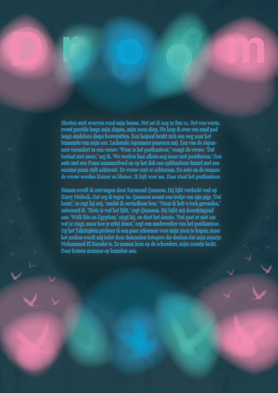

#3 Droom
Slierten mist zwerven rond mijn benen. Net zat ik nog in Bus 21. Het was warm, zweet parelde langs mijn slapen.
Slierten mist zwerven rond mijn benen. Net zat ik nog in Bus 21. Het was warm, zweet parelde langs mijn slapen.
De klok slaat twaalf uur in de middag als de beruchte blogger Max J. Molovich op het Stationsplein uit het gemeenteblik stapt.

Ik stap bus 21 uit terwijl ik mijn zoon op nog geen halve meter hinderlijk achtervolg.

De klok slaat twaalf uur in de middag als de beruchte blogger Max J. Molovich op het Stationsplein uit het gemeenteblik stapt.

Zodra ik de bus uitstap steek ik een dikke vette joint op. De derde van de dag al.
Het is snikheet in die godverdomde bus. Stinkend zweet vermengd met de geur van klamme jassen.

De bus stopt voor Centraal, z’n zoon slaapt in z’n armen De regen plenst hem nat, de wind jankt langs zijn oor.

Vlak voordat ik de bus uitstap bedank ik de buschauffeur via de spiegel voor zijn diensten. Hij zwaait joviaal terug.